User guide
Wildcat Mesh user guide
Everything about Wildcat Mesh for iPhone (iOS 17 or later). Button and screen names are written as they appear in the app. The same guide is built into the app and works offline, out in the field: tap ? on the Play tab, or open Meshtastic → Guide.
01Start here
What Wildcat is and what you need
Wildcat Mesh is one app for both LoRa mesh networks, Meshtastic and MeshCore. Your phone talks to your own node over Bluetooth; the node does the radio work. You can connect one Meshtastic node and one MeshCore node at the same time.
- An iPhone with iOS 17 or later.
- A Meshtastic node with Bluetooth (Heltec, RAK, Seeed, LilyGO and others), and/or a MeshCore node running the Companion (Bluetooth) firmware.
- No account. Wildcat has no servers and collects no data.
- Charge your node and close the official Meshtastic or MeshCore app.
- Open the Meshtastic tab and tap Find my node, or the MeshCore tab and tap Find MeshCore nodes.
- Brand-new Meshtastic node? Tap Set up this node and pick your region.
- Say hi on Messages, then try Play → Daily Fox.
No radio yet? Tap Play → Practice. Pretend radios on your phone let you try every screen. See Practice mode.
02The five tabs
Where everything lives
- Play
- Every game: Fox Hunt, Geo Gifts, Daily Fox, your My Mesh card, and Practice when no radio is connected.
- Messages
- Channel and direct chats on both networks, grouped by the radio they travel through, plus People.
- Explore
- Your collection: Nodedex, achievements, Territory, coverage walks and today's Daily Fox.
- Meshtastic
- Connect your Meshtastic node: its status, nodes, map, channels and settings, plus the More menu (Bridge, Den, Guide, Safety, About, Radio log).
- MeshCore
- Connect a MeshCore node: chats, contacts, maps, channels, settings, repeater admin and the bridge.
The radio pill at the top left shows both radios at a glance: an LED in each network's colour (grey when that radio isn't connected) that blinks when a packet is heard, and each node's name. Tap it to see both radios and jump to either tab.
03Connecting
Connect your radios
Bluetooth, PINs, reconnecting
Meshtastic
- Close the Meshtastic app (swipe it away): a node talks to one phone app at a time.
- On the Meshtastic tab, tap Find my node and pick yours from the list.
- If iOS asks for a PIN, use the one on the node's screen. Nodes without a screen usually use
123456. - When the status shows your node's name, you're connected. Next time, tap Reconnect.
MeshCore
- Make sure the node runs MeshCore's Companion (Bluetooth) firmware.
- Close the MeshCore app, on your phone and on your Mac: a node talks to one app at a time.
- On the MeshCore tab, tap Find MeshCore nodes and tap yours under Found nearby. Wildcat syncs its contacts and channels.
- If iOS asks for a PIN, it's usually
123456on nodes without a screen.
Repeaters and room servers don't appear in that list: they have no phone Bluetooth. They show up in Contacts once your node hears their advert.
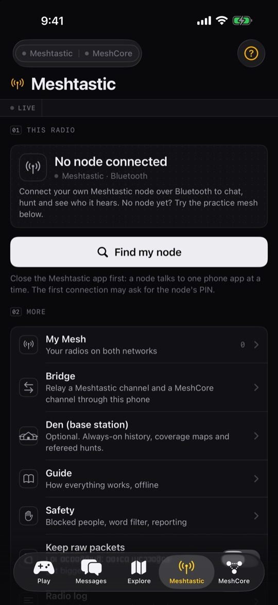
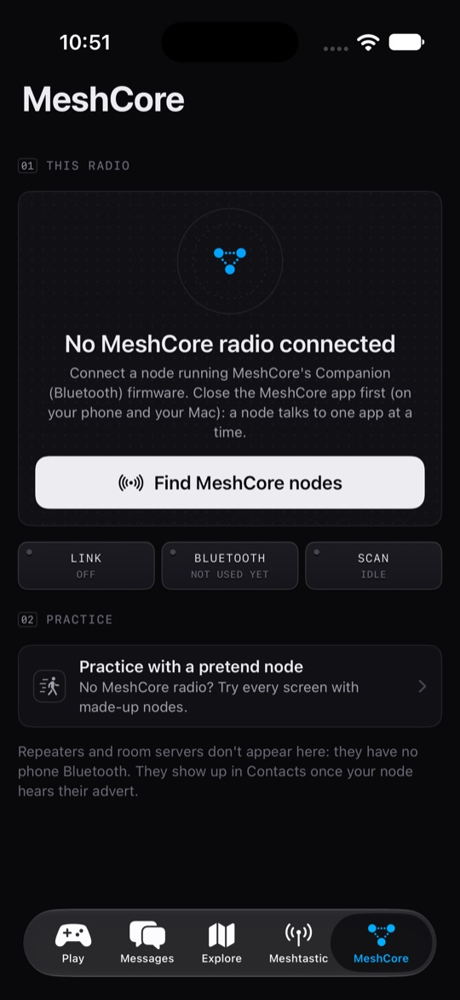
Disconnecting only stops Wildcat listening: your node keeps running. Its chats stay on your phone.
Wildcat asks for permission to send notifications once a real node connects, so new messages can reach you while the app is in the background.
04Play tab
Every game in one place
Nothing on Play needs a Den or any server.
- Practice
- Shown while no radio is connected. Starts pretend radios and opens a practice Fox Hunt. See Practice mode.
- My Mesh
- Your radios on both networks, and what each one does. See My Mesh.
- Fox Hunt
- Hide a node, then find it by its signal alone. Solo, or with friends on the mesh. See Fox Hunt.
- Geo Gifts
- Leave a message that only opens at a place. See Geo Gifts.
- Daily Fox
- Today's fox, a real node near you. See Daily Fox.
While a hunt is running, a Hunt in progress: back to it button takes you straight back.

05Messages tab
Chats on both networks
Grouping, ticks, replies, the details under every message
Chats are grouped by the radio they travel through: blue is MeshCore, amber is Meshtastic. Filter with All, MeshCore, Meshtastic or Direct, search with Search chats, and start a new direct chat with +. Chats you saved stay readable while a node is disconnected.

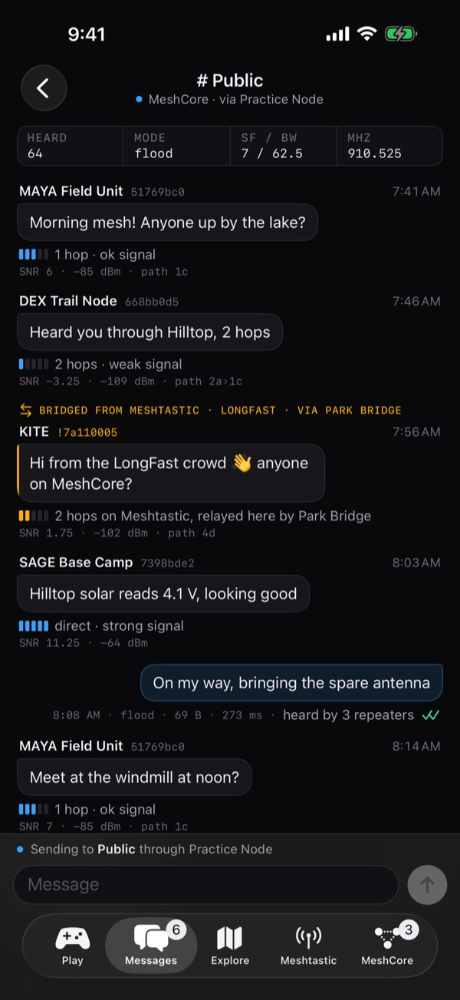
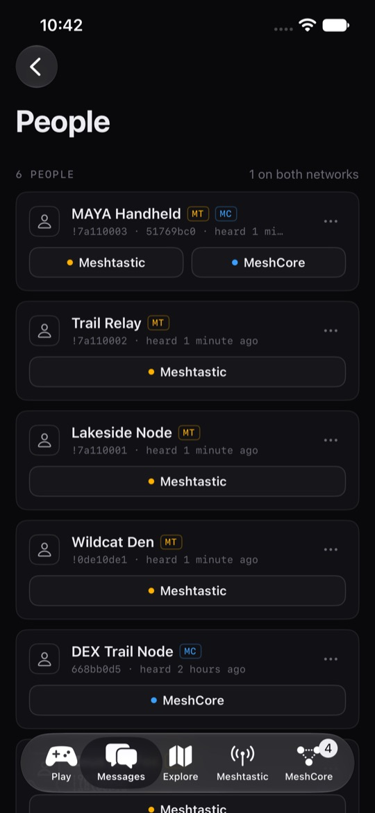
Delivery
- Clock
- Sending.
- Tick
- A neighbour repeated it: it's out on the mesh.
- Green tick
- The person you messaged confirmed it (direct messages).
- Red mark
- Not delivered, with the reason. Long-press and choose Send again.
On MeshCore, your own messages also show how many repeaters were heard passing them on.
The line under each message
Every received message shows how it arrived: signal bars, hops ("direct", "2 hops"), SNR and RSSI, and the path of repeaters where the network reports it. A cloud icon or "MQTT" means it came over the internet rather than by radio. The strip at the top of a chat shows the channel's recent traffic and radio settings.
Long-press a message
- Reply and React (Meshtastic), Copy.
- Show raw packet: the packet fields (type, hops, SNR, RSSI, relay, hash, round trip). To see the bytes themselves, turn on Meshtastic → Keep raw packets; it applies to messages that arrive from then on.
- Report… and Block: see Safety.
Each message is one radio packet: at most 200 bytes on Meshtastic and 133 bytes on MeshCore. Short and sweet travels furthest.
People
Tap People for everyone your radios know on Meshtastic and MeshCore, with the same person merged across networks. Message them on either network, or block them from the … menu.
06Explore tab
Your collection and your ground
The top of Explore counts your walked tiles, Nodedex, foxes found and your Daily Fox streak.
- Nodedex
- Every node your radio hears directly. Rarity is the longest distance you heard it from directly: 1 km uncommon, 5 km rare, 15 km legendary (it needs the node's position).
- Achievements
- Firsts and milestones.
- Territory
- Hexagons you've covered on coverage walks, coloured by how well your Den heard you. Fog hides the rest. The Frontier is your farthest reach from the Den in 16 directions. Needs a Den.
- Coverage walk / drive
- Map where your mesh reaches. Needs a Den, see below.
- Daily Fox
- Today's fox. See Daily Fox.
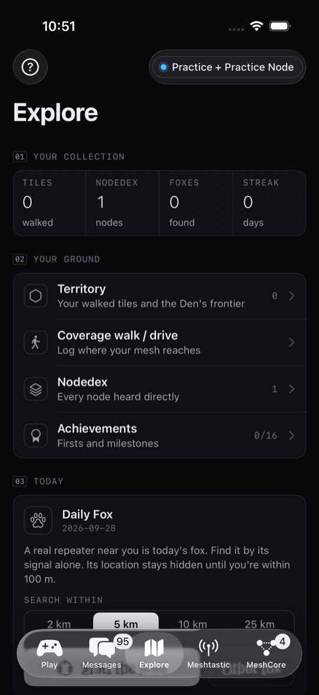
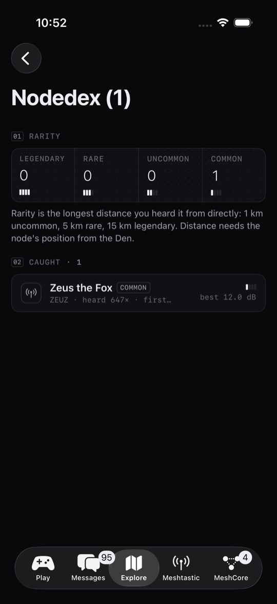
Coverage walks and drives
- Connect your Meshtastic node and your Den.
- Explore → Coverage walk / drive, and pick a private channel the Den also has.
- Walk or drive. Every 30 seconds your node sends a beacon with no location in it; your phone pins it to where you stood.
- Dots: the Den heard you (green strong, amber ok, red weak). Triangles: you heard the Den. Black rings: dead spots.
Keep Wildcat open while you walk or drive: logging pauses when the phone locks.
07Meshtastic tab
Your Meshtastic node
Status, nodes, map, channels, settings
- This radio: battery, channel use (how busy the air is), best SNR, uptime and how many nodes it hears. Disconnect stops Wildcat listening; your node keeps running.
- Radio: frequency band, preset, frequency slot, hop limit and transmit power, and whether transmit is off. What's this? explains channels and keys.
- Heard nearby: the latest nodes, with All nodes and the Mesh map.
- Channels: up to 8. Wildcat warns you if the node has no
WGHUNThunt channel. - More: My Mesh, Node settings, Bridge, Den (base station), Guide, Safety, About Wildcat Mesh, Keep raw packets and the Radio log.

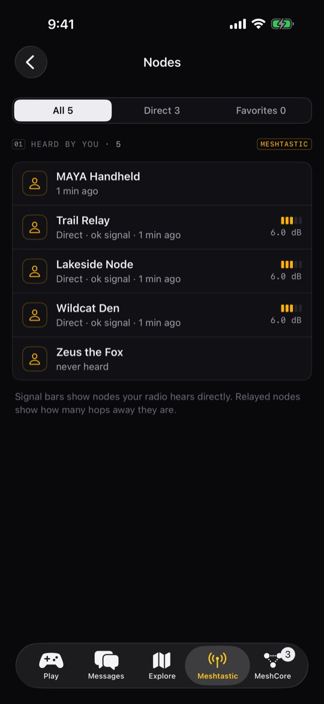
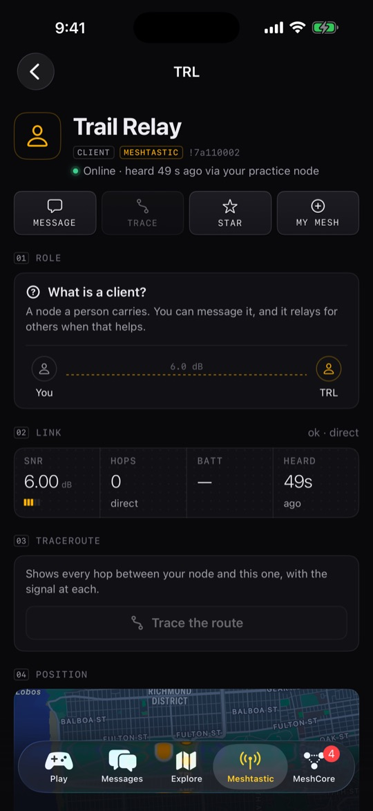
Nodes and traceroute
- All nodes lists every node your radio knows, filtered by All, Direct or Favorites and searchable by name, ID or hardware. Signal bars mean heard directly; relayed nodes show their hop count.
- Tap a node for its battery, voltage, channel use, path and position, and its raw fields (Copy all).
- Trace the route shows every hop out and back with the signal at each (once per 30 seconds: it costs airtime).
- Star keeps it at the top; My Mesh marks it as yours; Block hides it; Remove from node database makes your node forget it until it's heard again.
Channels and keys
A channel is a name plus an encryption key. Only nodes with the same key can read it. Slot 0 is the primary: where the node's automatic broadcasts go, and what sets its frequency.
- Create: Node settings → Channels → New private channel (a random 256-bit key).
- Share: tap the channel, then show the QR code, Copy link or Share link. Share all channels as QR shares the whole set.
- Import: Import a Meshtastic channel link or QR → Scan or Paste → Apply.
Frequency rule: a node's frequency comes from its primary channel's name. Rename the primary and the node moves to a different frequency and stops hearing everyone, unless its frequency slot is pinned. Node settings shows the slot; Wildcat's fox links pin it for you.
Links and QR codes use the same format as the Meshtastic app, so friends can scan them in either app.
Set up a new node
A new node won't transmit until it has a region, the legal frequency band for your country.
- Connect it, then Meshtastic → Set up this node.
- Pick your region (United States is 915 MHz), a long name and a short name (4 characters).
- Leave the role on Client unless you know you want something else.
- Tap Set up node. It restarts to apply the region: reconnect after about 20 seconds.
- Client
- The normal choice for a node you carry.
- Client (mute)
- Talks but never relays: for a second node right next to another.
- Router
- Fixed, high infrastructure only. Not for handhelds.
- Tracker
- Sends its position often, sleeps otherwise.
Node settings
Node settings covers the node's name, radio (region, preset, frequency slot), role, position and channels, plus two one-tap setups: Make this node the fox (see Make a fox) and Make this node my Den (see Den). Region and role changes restart the node.
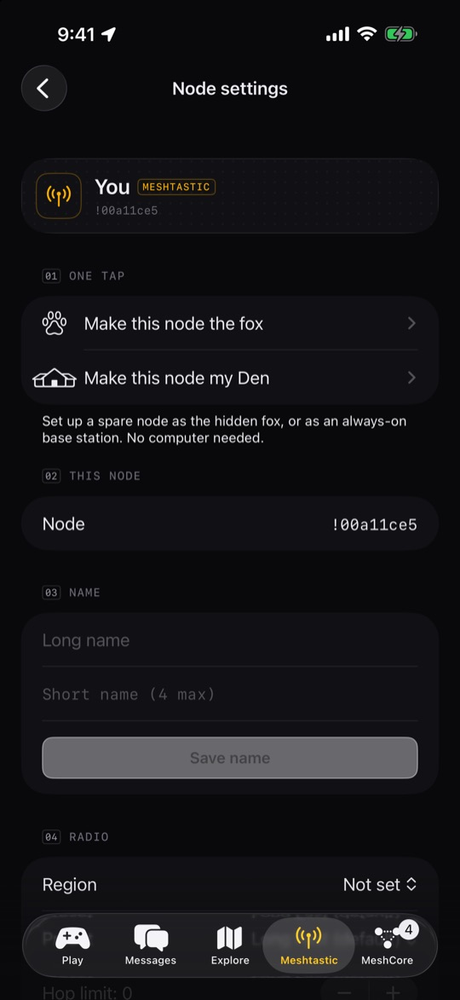
08MeshCore tab
Your MeshCore node
Status, radio, chats, contacts, maps, channels, settings
- This radio: battery, packets heard (and whether the channel is quiet or busy), nodes heard in the last day, best SNR and when it last heard something. Switch disconnects to find another node.
- Status keys: Link, Bridge, GPS (shared, private or off) and Advert: tap Advert to announce your node so others can add you.
- Radio: frequency, bandwidth (BW), spreading factor (SF), coding rate (CR) and transmit power. Every radio you want to hear must match all four.
- Heard nearby, sortable, and your Chats.
- Play: Fox hunt a repeater.
- Manage: My Mesh, Contacts, Map, Map (both networks), Channels, Node settings and Bridge to Meshtastic.


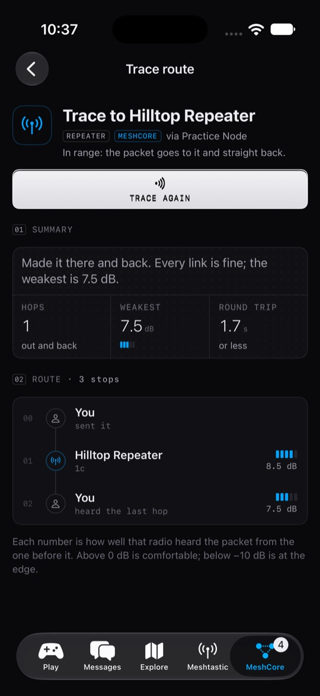
How MeshCore differs
MeshCore splits the jobs: companions (the radios you carry) never repeat. Only repeaters and room servers forward messages. The first message to someone floods out through every repeater; once it arrives, the route is learned and later messages take just that path. Reset route on a contact forgets the path and finds a new one.
Contacts and maps
- A node becomes a contact when your node hears its advert (if auto-add is on in Node settings). Remove a contact and it comes back the next time its advert is heard.
- The Map shows contacts that share a position; tap one for bearing, distance, hops and SNR, then Message or Trace. Map (both networks) adds your Meshtastic nodes.
- Trace sends a small packet along the route and back; every repeater notes how well it heard it. Above 0 dB is comfortable; below −10 dB is at the edge.
Channels
Channels → Add a channel creates a private channel with a random 128-bit key, or joins someone's with their name and key (32 hex digits: paste it or Scan QR). A channel's page shows its QR code to share, and works with the MeshCore app too.
Node settings
Name, radio (with a one-tap USA/Canada preset, 910.525 MHz · 62.5 kHz · SF7 · CR5), transmit power, position sharing, auto-add contacts, the Bluetooth PIN, Send advert now and Reboot node (reconnect after about 20 seconds). Shared positions put your node on other people's maps.
09Bridge
Relay a channel between the two networks
Meshtastic and MeshCore can't hear each other. The bridge makes your phone relay messages between one Meshtastic channel and one MeshCore channel. Open it from Meshtastic → Bridge or MeshCore → Bridge to Meshtastic.
- Make a private channel on each network, for example
WGBRIDGE, and have your friends on each side join it. - Connect your Meshtastic node and your MeshCore node.
- In Bridge, choose the Meshtastic channel and the MeshCore channel, then turn on Bridge on.
- Keep Wildcat open. Status shows ⇄ Live while both nodes are connected, and the Relayed list shows what crossed.
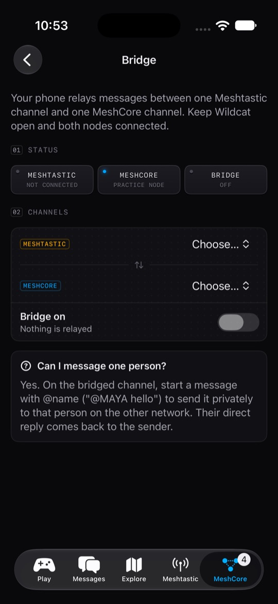
- Bridged messages carry the sender's name and network, and show in Wildcat as "Bridged from Meshtastic" or "Bridged from MeshCore".
- To message one person privately on the other network, start with
@nameon the bridged channel ("@MAYA hello"). Their direct reply comes back to you. - Geo Gifts, and their "opened" receipts, cross the bridge too.
- Blocked people never cross, either way.
Public channels can't be bridged. A public channel belongs to everyone nearby, and bridging it would push your traffic onto their mesh. If a chosen channel disappears or becomes public, the bridge turns itself off and says why.
10Fox Hunt
Find a hidden node by its signal
Join, host, solo, Daily Fox, MeshCore fox hunt
One node is hidden: the fox, with a 4-digit code written on it. Hunters walk with their own Meshtastic nodes and phones. A referee (the host's phone, over the radio) scores the hunt. Hunt messages travel on the WGHUNT channel.
The fox screen
- Signal: how loud your own radio hears the fox right now, with Warmer or Colder and a meter. Only direct radio counts; relayed or internet readings never do.
- Trend over the last two minutes, and a radar that shows a bearing once you've walked around a little.
- Keys along the bottom: Ping now (ask for a fresh reading), Found it, Ticks (haptic Geiger-counter taps that speed up as you get closer) and Leave.

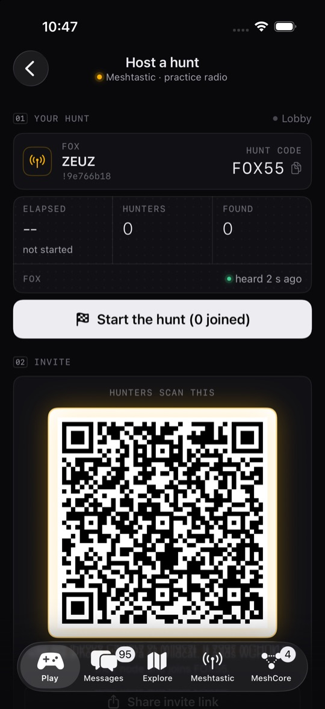
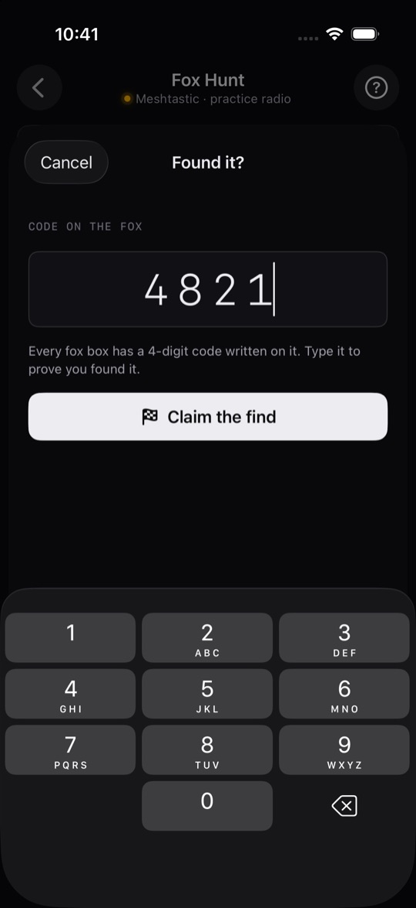
Join a hunt
- Scan the host's QR code with the iPhone Camera, or with Play → Fox Hunt → Scan a host's QR. Wildcat adds the hunt channel to your node if needed and joins. (Or type the Hunt code and Your name and tap Join.)
- Walk. The gauge rises as your radio hears the fox louder, and your phone taps faster.
- After the host taps Start, the referee answers with warmer/colder and, after enough readings, a bearing.
- Find the box, tap Found it, type the code and Claim the find.
Host from this phone
- Connect your node (it needs the
WGHUNTchannel; making a fox creates one). - Play → Fox Hunt → Host from this phone. Pick the fox node, enter the code written on it, choose how a find counts, and Open the lobby.
- Hunters scan the QR code (or you Share invite link). Want to play too? Tap Hunt too, on this phone.
- Tap Start the hunt. Your phone referees through your node; End hunt finishes it for everyone.
- Code
- Hunters must type the 4-digit code written on the fox.
- Signal
- Getting very close by radio is a find. Good for kids.
- Either
- The code, or a very strong signal.
Scoring
- Place points
- 100 / 70 / 50 / 30 for 1st to 4th and later.
- +50 RF witnessed
- The fox's own radio relayed your claim: you were right there.
- +25 RF attested
- Your node heard the fox strongly in the last 5 minutes.
Five wrong codes lock you out of the hunt.
Solo hunt
Play → Fox Hunt → Solo hunt hunts any node by its signal alone, with no referee. Have someone hide your fox, or hide it yourself and walk away for a few minutes first. The fox beacons about once a minute; Ping for a fresh reading.
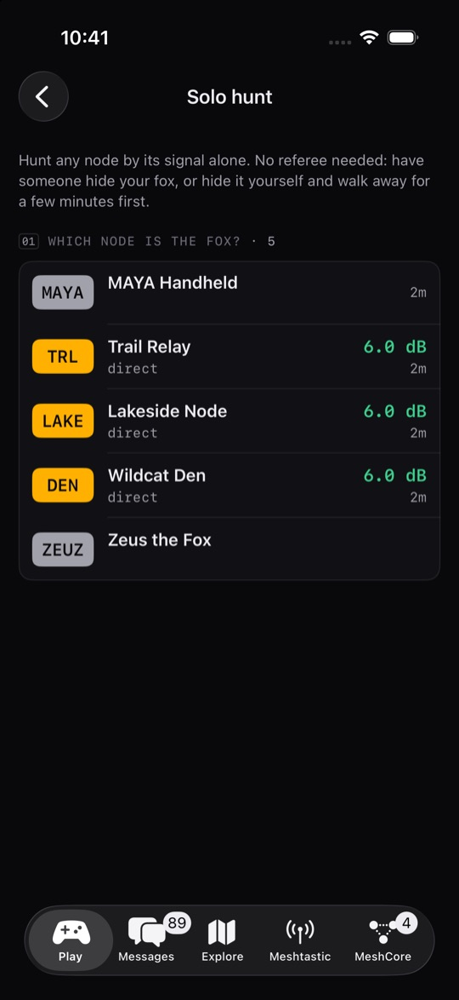
Make a fox
Any small node on a battery makes a great fox. Use a spare node, not the one you carry.
- Connect your everyday node once (the one with
WGHUNT). Wildcat remembers the hunt channel and your mesh's frequency. - Connect the spare node → Meshtastic → Node settings → Make this node the fox → Make it the fox.
- It restarts once. Hunters scan the QR code shown afterwards to add the hunt channel.
- Write a 4-digit code on it and hide it.
- Hunt channel only
- Its only channel, pinned to your mesh's frequency so everyone hears it.
- Low power
- 10 dBm: walking closer really changes the signal.
- Location hidden
- GPS off and no fixed position: hunters can't just read it off the map.
- Heartbeat
- Battery and uptime every minute, no location. That's what your radio hears.
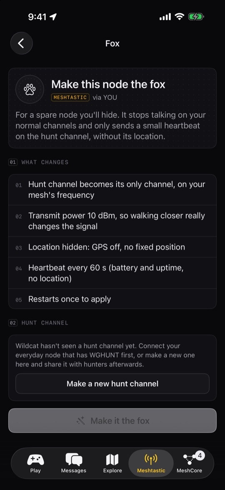
No hunt channel yet? The fox screen can make a new one; share its QR code with hunters.
Put the fox somewhere public and safe, never on private property.
Daily Fox
Each day a real node near you is the fox: one your radio has heard in the last few days, with a known position, picked from where you are within the distance you choose. Find it by its signal, including traffic it relays. You've found it when you stand within 100 m; its location stays hidden until then.
- Ping
- Asks the fox for a fresh reading (a traceroute). Once per 30 seconds: it costs airtime.
- Hint
- −150 points each: first how far, then which way.
- Give up
- Reveals where it was. A new fox appears tomorrow.
- Streak
- Days in a row with a found fox.
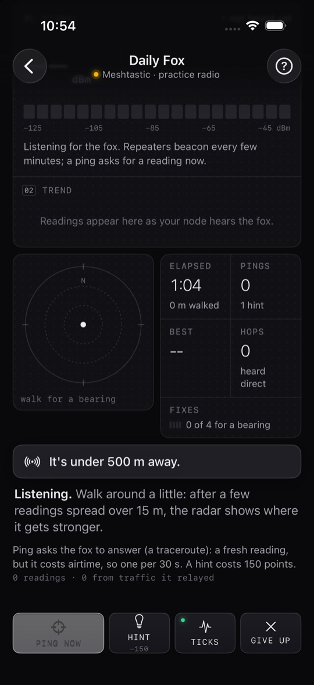
Daily foxes are other people's nodes, often on private property. Finding it within 100 m means you can do it from the street.
MeshCore fox hunt
MeshCore → Fox hunt a repeater: pick a repeater and find it by its signal alone. Every packet it transmits (its adverts, the traffic it relays and answers to your pings) moves the scope. If the repeater shares its position, the distance shows once you're within 150 m.
Only hunt repeaters you're allowed to walk up to: many sit on private property. Hide your own somewhere public and let friends hunt it.
11Geo Gifts
Messages that only open at a place
Leave a message that only opens when someone stands on the spot. There's no server: the message is locked with the place itself, so even the app can't read it anywhere else.
- Play → Geo Gifts → Leave a gift.
- Tap the map to drop the spot, or Use where I'm standing.
- Write the message (up to 140 bytes) and an optional teaser they see before it opens.
- Pick how close they must be (Tight about 30 m, Easy about 100 m, Loose about 300 m) and a hint area: the exact spot, or a 300 m, 1 km or 3 km circle to search.
- Send it over the mesh to everyone on a Meshtastic channel, to one person, to a MeshCore channel, or as a link or QR code (no radio needed).
A gift you receive waits locked in Geo Gifts → For me, with the hint area on a map, the distance and the direction. Walk there with Wildcat open: it opens by itself, and the sender gets an opened receipt over the mesh. I left lists your gifts and who opened them. Got a gift link? Open a gift link from the clipboard.
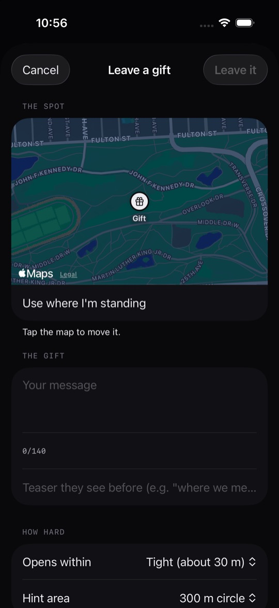
Scavenger hunt: leave several gifts, and put the clue to the next spot inside each message.
Phone GPS is usually within 5–15 m. Use Easy (about 100 m) for places under trees or between buildings.
12My Mesh
Every radio you own
My Mesh (on Play, and under More/Manage on both radio tabs) lists your radios on both networks: how many are online, and for each one its role in plain English, its battery and when it was last heard.
- A radio joins when this phone connects to it, or when you log in to a repeater as admin. You can also mark a node you hear as yours from its page.
- Tap a radio for what it does, its latest status (for repeaters: battery, relayed and heard packets, noise), its radio settings, and a shortcut to connect, trace, open settings or log in as admin.
- Remove from My Mesh changes nothing on the radio.
- How your mesh works explains why each Meshtastic radio stretches the mesh, why MeshCore leaves repeating to repeaters, and why one repeater up high can link people who could never hear each other.

Add the Wildcat Mesh widget to your Home Screen for both nodes, the bridge and the latest messages at a glance.
13Repeater admin
Manage a MeshCore repeater over the air
A repeater is a radio on a hill or roof that passes messages along so they travel farther. It doesn't chat, but you can trace through it or manage it with its password.
- Open the repeater from Contacts, the map or Heard nearby, and tap Admin.
- Enter the Admin password. It travels encrypted to the repeater and only works when your node can reach it. Turn on Remember on this phone (Keychain) if you like.
- Tap Log in. Or Check status as a guest without a password.
- Status: a one-line health summary, uptime, battery, noise floor, packets relayed and heard, and airtime, with Refresh and Log out.
- Console: send commands (quick buttons for
ver,get radio,get tx,neighbors,clock,advert,powersaving). Commands are the same as over USB; see the MeshCore CLI reference.

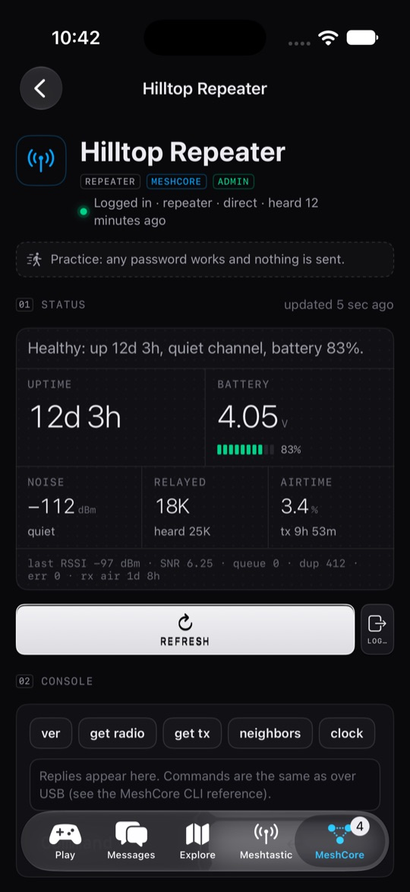
MeshCore only sends the first 15 characters of a password, so a longer one can't log in from a phone.
14Safety
Block, report and filter
Messages travel radio to radio with no server, so moderation lives on your phone. Find it all in Meshtastic → Safety.
- Block
- Long-press a message and choose Block (or block from People, or a node's page). Their messages disappear from Wildcat on both networks, you get no notifications from them, and the bridge won't relay them. Blocking a Meshtastic node also makes your connected node ignore it.
- Report…
- Long-press a message and choose Report… (or Report and block). Wildcat opens an email to redthoroughbreds@gmail.com with the message filled in. Nothing is sent unless you send it. No mail app? Copy the report instead.
- Word filter
- Hide strong language is on by default: slurs and strong swearing in messages you receive show as •••• until you tap. Notifications never show them.
- Unblock
- In Meshtastic → Safety, tap Unblock next to the person.
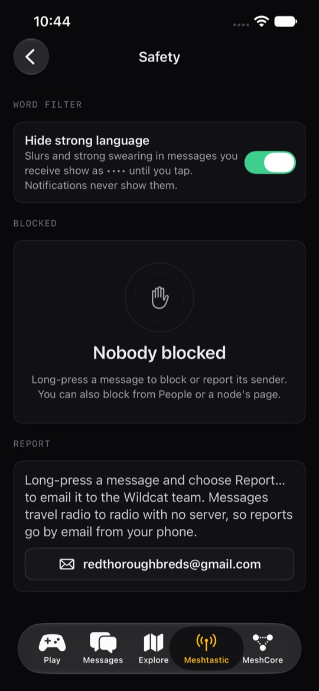
15Den (optional)
An always-on base station
A Den is optional: every game works with just phones and nodes. There are two kinds.
- Den Lite
- No computer: Meshtastic → Node settings → Make this node my Den, for a node that stays plugged in at home or up high. It relays for everyone, holds its position (where your phone is now), sends a heartbeat and, on ESP32 boards with PSRAM, stores messages for nodes that were away. It restarts once.
- Full Den
- A Raspberry Pi or computer with a node plugged in, running the Wildcat Den software. It hears the mesh day and night and adds history, coverage maps, Territory and refereed hunts (Host on the Den).
- Put the Den and your phone on the same Wi-Fi, or on the same Tailscale network.
- Meshtastic → Den (base station) → Enter Den address, for example
100.x.y.z:5050. iOS may ask to allow local network access. - To send through the Den, add its operator password in Den settings.
Wildcat connects only to the address you enter. Nothing goes to us.
16Practice mode
Try everything without a radio
Tap Play → Practice. Wildcat starts a pretend Meshtastic radio and a pretend MeshCore radio on your phone, with made-up nodes, chats, repeaters, a Den and a fox, and opens Fox Hunt. Nothing is transmitted.
- Tap Join and hunt the practice fox. Its code is
4821. - Try Messages, both radio tabs, the maps (tap a pin), My Mesh, Geo Gifts and Explore.
- Repeater admin works too: any password works and nothing is sent.
- Pretend radios in My Mesh aren't saved. Tap End practice on the Meshtastic tab to finish; the pretend nodes and fox go away.
You can also start each network's practice radio on its own tab: Practice on the Meshtastic tab, or Practice with a pretend node on the MeshCore tab.
17Airtime manners
Be a good mesh neighbour
Everyone shares the same slow radio channel. Every packet you send is airtime others can't use.
- Keep chats short; don't flood the public channel.
- Use pings and traceroutes sparingly (the app limits them).
- Run games, bridges and coverage beacons on a private channel.
- Use your correct region. It's the law.
18Troubleshooting
When something doesn't work
- Can't connect
- Close the official Meshtastic or MeshCore app first (on your Mac too, for MeshCore): a node talks to one phone app at a time. Then turn Bluetooth off and on, or restart the node. On Meshtastic, Meshtastic → Radio log shows every connection step.
- MeshCore node not found
- It must run the Companion (Bluetooth) firmware. Repeater and room-server firmware has no phone Bluetooth.
- PIN prompt
- The first connection may ask for the node's PIN: the one on its screen, or usually
123456on nodes without a screen. On MeshCore you can change it in Node settings. - Bluetooth not allowed
- If you tapped Don't Allow, Wildcat can't reach your node. Tap Open Settings in the app, or go to Settings → Wildcat Mesh and turn on Bluetooth. If Bluetooth is simply off, turn it on in Control Center.
- Location off
- Fox Hunt, Daily Fox, Territory, Geo Gifts and coverage walks need your location while using the app. Go to Settings → Wildcat Mesh → Location and choose While Using the App.
- No notifications
- Settings → Wildcat Mesh → Notifications. Wildcat asks once a real node connects.
- Nobody hears me
- Meshtastic: is the region set, is transmit enabled, and is the node on the same preset and frequency slot as your mesh (Node settings → Radio)? MeshCore: do frequency, BW, SF and CR match the radios around you?
- Settings didn't save
- "The node didn't answer": reconnect and try again. Region and role changes restart the node.
- Can't hear the fox
- Is
WGHUNTon your node? Is the fox beaconing (a heartbeat every minute)? Is it on the same frequency slot? - Bridge not live
- Both nodes must be connected, Wildcat must be open, and both chosen channels must be private.
- Den offline
- Is Tailscale connected on your phone? Is the Den running?
Still stuck? Email redthoroughbreds@gmail.com with your iPhone model, iOS version, and which radio and firmware you use.
↑ Back to top